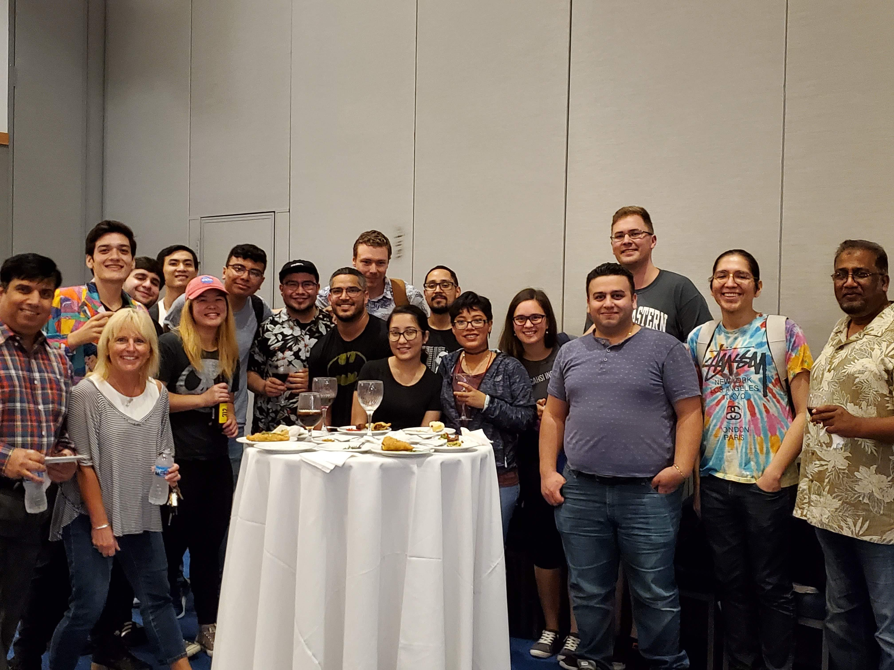

About Me
Peer Led Team Leading Jan 2019 – Aug 2019
Serve as a peer leader to current Programming II students
by facilitating small group discussions Provide guidance in
order to enhance student engagement and strengthen their
understanding of course objectives

Computer Science Society (CSS)
ACM Chapter Officer Oct 2018 - Present
Fall 2018: Elaborated strategies with a team to deliver workshops catered to computer science students.
Fall 2019: Coordinating Local Hack Day (Sponsored by Major League Hacking - GitHub).